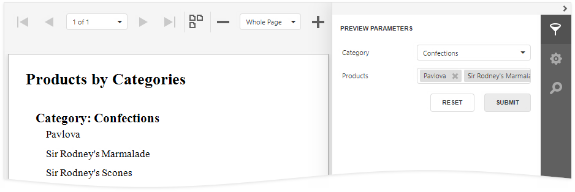
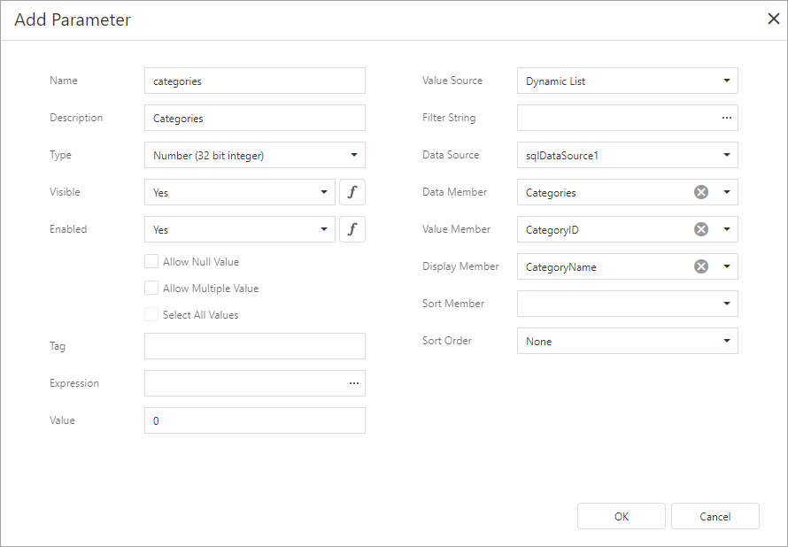
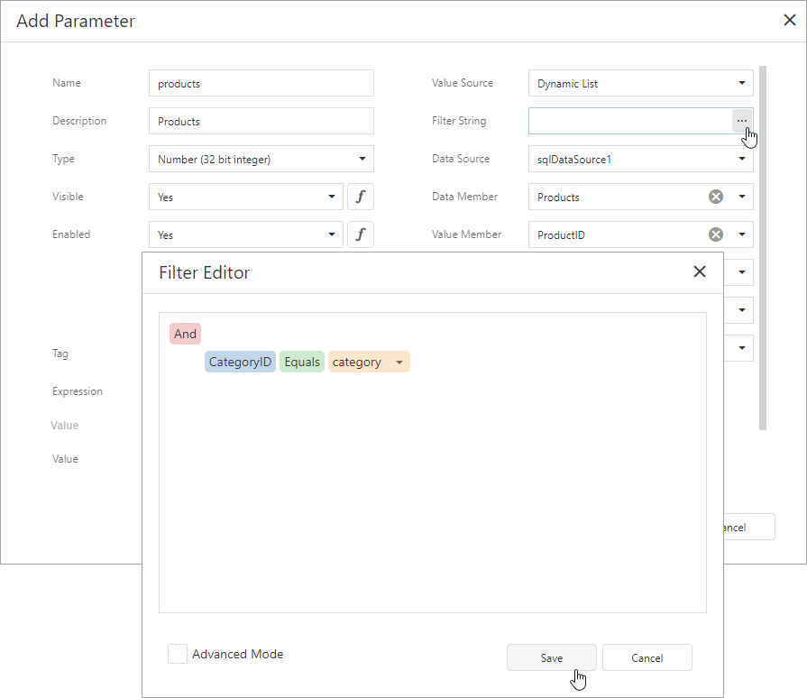
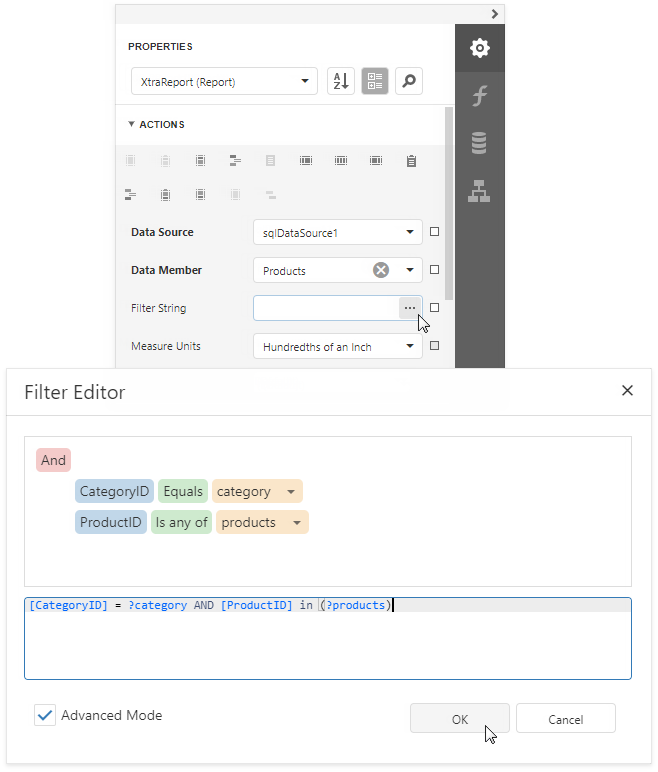

Cascading Report Parameters
You can create cascading parameters to filter a list of predefined parameter values based on values in another parameter.

Tip
Refer to the following topics for information on how to create a list of predefined parameter values:
Follow the steps below to create cascading parameters in the Report Designer:
Create a report parameter you want to use to filter values of another parameter.

Create a report parameter whose values you want to filter. Click the Filter String property's ellipsis button in the Add New Parameter dialog and specify a filter string that references the parameter you created in the first step.

Note
In a filter string for a parameter's look-up values, you can reference only those parameters that you created before the parameter whose look-up values you want to filter. You can use the Report Parameters Editor to change the order in which you created the parameters. To invoke the editor, right-click the Parameters node in the Field List and select Edit Parameters.
In the report's smart tag, click the Filter String property's ellipsis button. In the invoked FilterString Editor, specify an expression that uses both parameters to filter report data:

The following image illustrates cascading parameters where the Product parameter values are filtered by the selected Category.